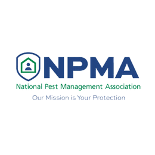
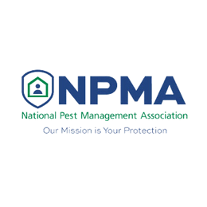
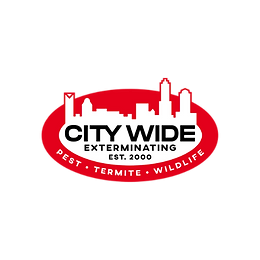
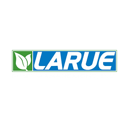
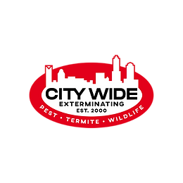
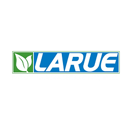
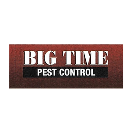
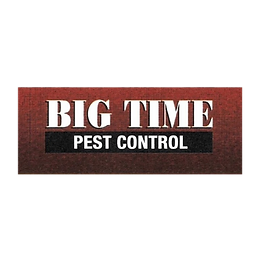

Why should I invest in this online course?
The Lawn Care & Pest Control industries are very crowded. Notice I did not say competitive! I have listened to over 2,000 sales calls and have noticed a recurring theme, the vast majority of salespeople in these industries wing it. They rely on their personality and a “feature dump” to close business.
That approach is not competitive! Many reps burn through leads in the busy season relying on your marketing dollars to drive inbound calls from homeowners that are ready to buy. They explain your programs to the buyer, give them a price and the buyer says “get me on the schedule”.
If the buyer says “I need to discuss it with my spouse, can you email the estimate over to me and I’ll get back to you?” The reps says: “happy to” and that’s the end of the call with no attempt to overcome the objection. The rep knows in a minute or so the phone will ring with a caller who is ready to buy. This is order taking and not professional selling. This is customer service behavior not sales professionalism and they are throwing your marketing dollars right out the window. This course will change all that and enable you to build a sales force that becomes your company’s number one competitive advantage. When your salespeople learn and execute six figure one call close strategies & tactics you will create a competitive gap between you and your closest competitor that will be extremely difficult for them to close!
How do I know this course will work for my sales team?
This online sales training course has been specially designed for the Lawn Care & Pest Control industries. The content is based on listening to over 2,000 sales calls and painstakingly identifying and documenting the one call sales strategies & tactics that 1.5 million dollar producers follow and execute. You can trust that this course will provide the strategies & tactics that are proven beyond a shadow of doubt to be highly effective in the Lawn Care & Pest Control industries. After the successful completion of this course your sales professionals will know and understand the strategies & tactics that A players use day in and day out on each and every call to achieve a 74%+ closing ratio on inbound calls.
Can you provide proof that the one call close strategies & tactics increase a sales organizations closing percentage?
Yes we can. You can check out videos from VirginaGreen’s founder here & Blades of Green founder’s here to hear the facts directly from them.
Does this course contain any live coaching?
Yes it does. There are 3 levels offered with this course. Gold, Platinum & Diamond and depending on the level you choose you will be provided with monthly live Q&A sessions giving your team the ability to discuss their wins and challenges and get valuable answers and insight real time. In addition, private sessions are also available.
Does this course contain Sales Management content?
Yes it does. Module 7 is a bonus module that covers Sales Management best practices. If you or your sales manager needs more content and coaching I also have a sales management coaching package that I’m happy to discuss with you.
Does this course contain Commercial Pest Management content?
Yes it does. Module 6 is a bonus module that covers commercial pest management sales. If you or your commercial pest control sales team needs more content and coaching I also have a commercial sales coaching package that I’m happy to discuss with you.
Is there a money back guarantee?
Yes there is! If you’re unhappy with the course for any reason, just email me within 7 business days of purchase for a full refund.
How long will this course take to complete?
The course has 5 standard modules and 2 bonus modules with a total of 42 lessons. The length of the entire course is just over 4 hours. With taking the short multiple choice quizzes into account the course should take on average 8 hours to complete.
That said, this isn’t a course your team should go through once and never look at again. I created it as a resource your team can come back to over and over again in the future.
.png)
 

 





 
